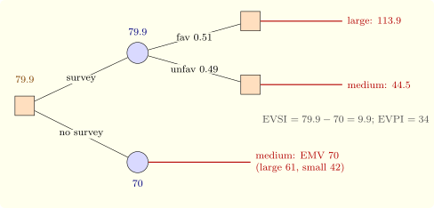

12.2 Decisions under risk
When probabilities \(\pi _j\) for the states are available, the standard criterion is the expected monetary value \(\text {EMV}(a_i) = \sum _j\pi _jP_{ij}\). With \(\pi = (0.3, 0.5, 0.2)\) in Example 12.1.1 the EMVs are \(61\), \(70\) and \(42\): build the medium plant. Minimising the expected regret, the expected opportunity loss, always gives the same choice, since \(\sum _j\pi _jR_{ij} = \sum _j\pi _j\max _kP_{kj} - \text {EMV}(a_i)\) and the first term does not depend on \(i\).
The value of information. If the state could be known before deciding, the best action for each state would be taken, with expected payoff \(\sum _j\pi _j\max _iP_{ij}\). The difference \[ \text {EVPI} = \sum _j\pi _j\max _iP_{ij} - \max _i\text {EMV}(a_i) \] is the expected value of perfect information, the most it is worth paying for any forecast. In Example 12.1.1, \(\text {EVPI} = 0.3 \times 200 + 0.5 \times 80 + 0.2 \times 20 - 70 = 104 - 70 = 34\), which is also the expected regret of the best action.
Real information is imperfect. A market survey reports favourable or unfavourable, with known reliabilities \(P(\text {fav} \mid \theta _j)\); by Bayes’ theorem it turns the prior \(\pi \) into a posterior, the best action is chosen for each report, and the expected payoff with the survey, minus that without, is the expected value of sample information (EVSI). The calculation is organised as a decision tree, with square decision nodes, round chance nodes, and payoffs at the leaves, evaluated from the leaves back to the root (rolling back): at a chance node take the expectation, at a decision node the best branch. This is dynamic programming (Theorem 11.1.1) with expectations.
Example 12.2.1. In Example 12.1.1 a survey is favourable with probability \(0.8\), \(0.5\), \(0.1\) when demand is high, medium, low. Then \(P(\text {fav}) = 0.3 \times 0.8 + 0.5 \times 0.5 + 0.2 \times 0.1 = 0.51\), and the posteriors are \((0.471, 0.490, 0.039)\) after a favourable report and \((0.122, 0.510, 0.367)\) after an unfavourable one. The best actions are the large plant (\(113.9\)) and the medium plant (\(44.5\)), so with the survey the expected payoff is \(0.51 \times 113.9 + 0.49 \times 44.5 = 79.9\), and \(\text {EVSI} = 79.9 - 70 = 9.9\) (Figure 12, Software 12.4.2). The survey is worth commissioning if it costs less than Rs. 9.9 lakh; its efficiency, \(\text {EVSI}/\text {EVPI} = 0.29\), says how much of the uncertainty it removes.

EMV is appropriate when the stakes are small relative to the decision maker’s wealth. For large risks, payoffs are replaced by utilities \(u(P_{ij})\), and the expected utility is maximised (von Neumann and Morgenstern, 1944). A concave \(u\) expresses risk aversion: the decision maker prefers a sure amount to a gamble with the same expected value, and the certainty equivalent of a gamble, the sure amount with the same expected utility, is less than its expected value.
Questions on this section
Stuck on something here? Ask below and it stays attached to this topic.